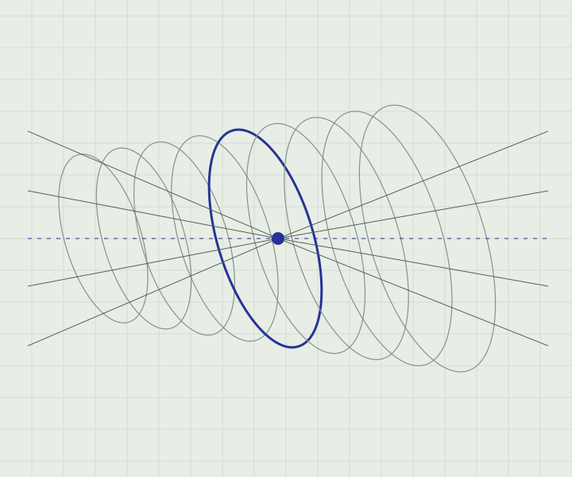

← Back to publication concept
3D vision / Medical image analysis
3D brain image segmentation using 3D tiled convolution neural networks
A publication detail designed for reading, context and source integrity.
Legacy title reproduced for layout exploration. Publication date, author order, venue and DOI are withheld pending verification.
Reading specimen
A clearer view of structure.
The legacy article describes a method for dividing a three-dimensional brain scan into regions using tiled convolution. This short description is a design sample based on that article, not a verified account of current lab work.

Reading without distraction
This panel demonstrates long-form measure, figure captions and heading rhythm. The production page would contain only an authorized abstract, accurate citation metadata and verified links. No citation-copy control is offered until its data is verified.
Read the existing lab article